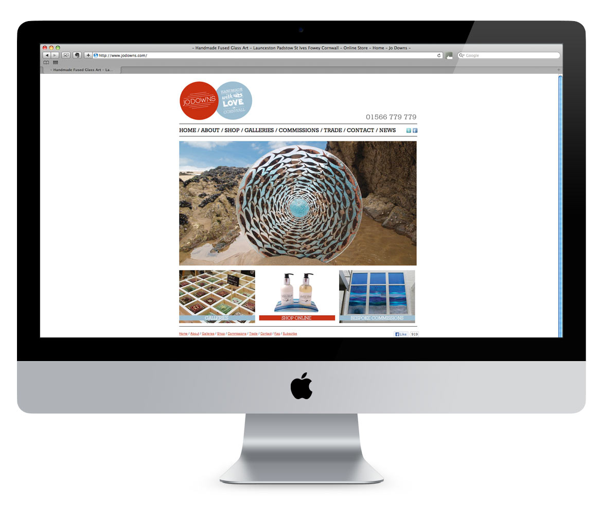
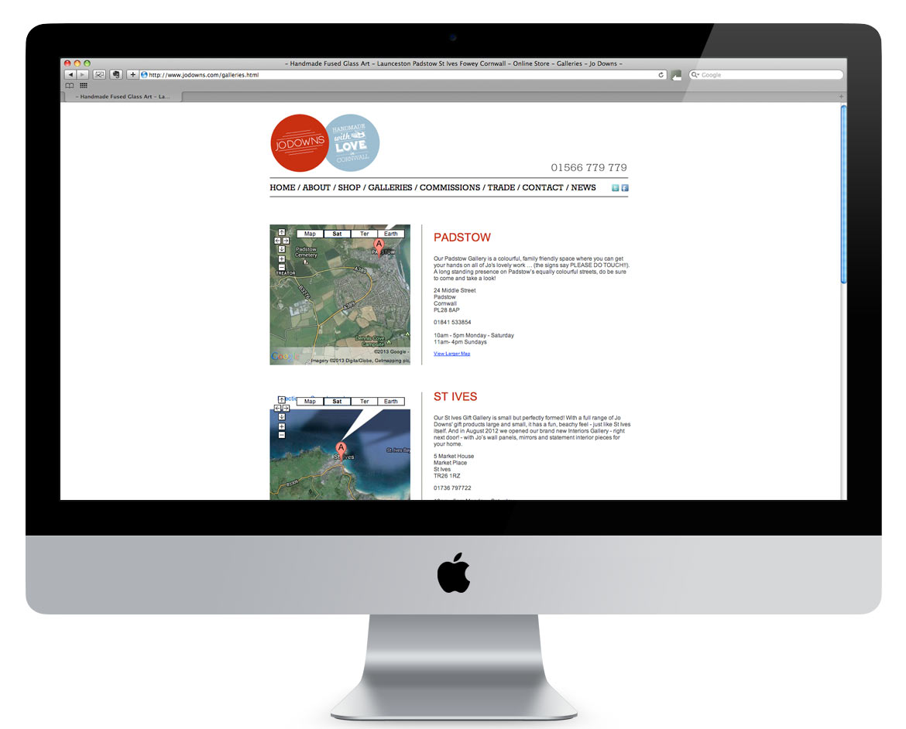
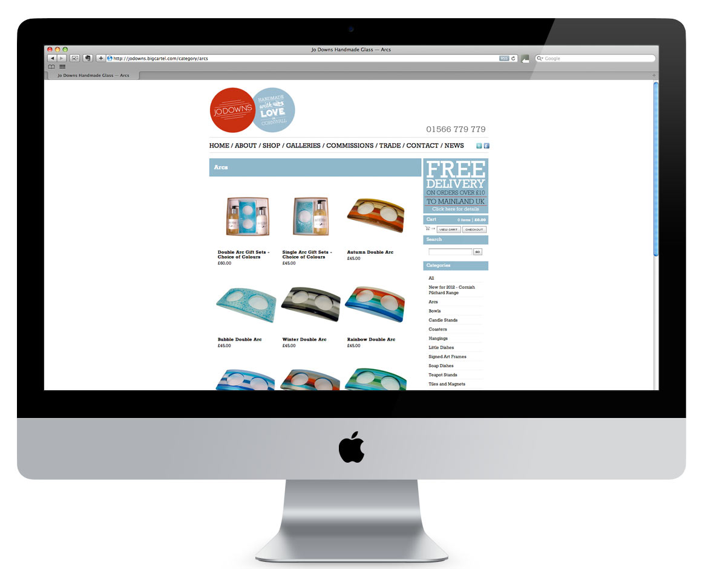

While working for Jo Downs Handmade Glass I saw the opportunity to expand their online offering which was lacking at the time. There was no way to purchase online and their beautiful handmade fused glass art was not being showcased to it's full extent. Budgets were limited so I couldn't outsource development which pushed me to learn to code. It wasn't anything groundbreaking but I put together a static HTML website and Wordpress blog. I also conducted a full photoshoot of lifestyle shots around the Cornish coast and shot around 250 products which were hosted on a linked Big Cartel shop.
The online store was a big success and at peak times bought in as much revenue as one of the brick and mortar stores in Cornwall.

